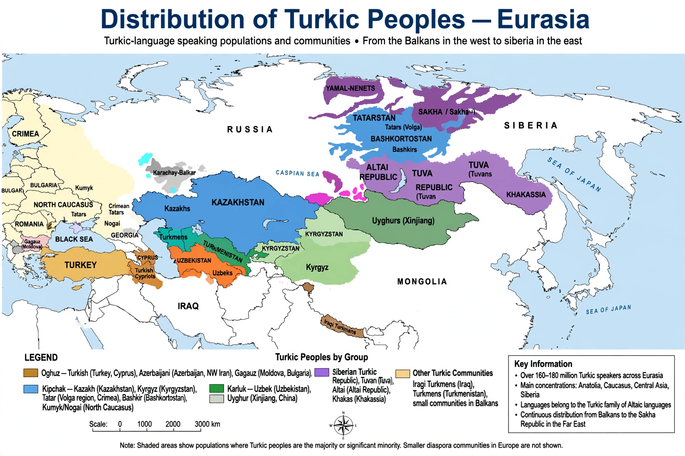

The Turkic peoples are a collection of diverse ethnic groups of West Asia, Central Asia, East Asia and Siberia who speak languages belonging to the Turkic language family. They number around 200 million people. The largest Turkic ethnic group in the modern world are the Turks of Turkey and Cyprus, followed by the Azerbaijanis, Uzbeks, Kazakhs, Uyghurs, Tatars, Turkmens, Kyrgyz and others. Turkic peoples are spread across a belt of Eurasia from the Balkans to northeastern Siberia (the Sakha/Yakuts) and western China (the Uyghurs of Xinjiang).

| Turkic peoples | |
|---|---|
| Total population | ~200 million |
| Regions | Turkey, Central Asia, Iran, Russia, Xinjiang, the Balkans, Cyprus |
| Languages | Turkic languages |
| Religions | Predominantly Islam; also Tengrism (historical), Buddhism, Christianity, Judaism |
The earliest Turkic peoples are associated with the steppes of present-day Mongolia and southern Siberia. The first state known to bear the name "Türk" was the Göktürk Khaganate, founded in 552 AD, which at its height stretched from Manchuria to the Black Sea; its Orkhon inscriptions (8th century) are the oldest surviving texts in a Turkic language. Successor states included the Uyghur Khaganate, the Khazars, the Karluks and the Karakhanids. Turkic groups such as the Cumans, Pechenegs and Kipchaks dominated the Pontic steppe, while the Seljuk Turks' victory over Byzantium at Manzikert (1071) opened Anatolia to Turkic settlement, setting the stage for the Ottoman Empire. Other major Turkic powers included the Golden Horde, the Timurids, the Mughals (of Turco-Mongol origin) and the Kazakh Khanate.
Turkic languages — some 35 of them — share agglutinative grammar, vowel harmony and SOV word order. Historically written in runiform, Arabic and Uyghur scripts, most are now written in Latin or Cyrillic alphabets. Shared cultural features include a steppe-nomadic heritage of horsemanship and felt yurt dwellings, oral epic traditions such as the Kyrgyz Manas trilogy (among the longest epics in the world), and Central Asian cuisine centred on breads, noodles and grilled meats. Most Turkic peoples converted to Islam between the 10th and 16th centuries, though the Sakha, Chuvash and Gagauz are largely Orthodox Christian, and some groups retained shamanic traditions.
Six sovereign states have Turkic-majority populations: Turkey, Azerbaijan, Kazakhstan, Uzbekistan, Turkmenistan and Kyrgyzstan; they cooperate through the Organization of Turkic States, founded in 2009. Large Turkic minorities live in Russia (Tatars, Bashkirs, Sakha), Iran (Azerbaijanis), China (Uyghurs), Afghanistan, Iraq and Syria (Turkmens), and Mongolia.
Turkic languages · Göktürks · Seljuk Empire · Ottoman Empire · Organization of Turkic States
From Wikipedia, the free encyclopedia.